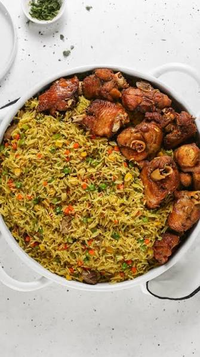

Fried Rice with Fried Chicken
HOME

This a delicious, healthy and affordable Dish.
It has a simple recipe. It doesn't require alot of time if all the ingrediants are available.
This recipe requires more attention because it involves frying and contantly stairing the food.
Let's discuss the list of ingrediants and the recipe for this delicious meal.
LIST OF INGREDIANTS
- Rice
- Cooking oil
- vegetables
- Eggs and Gizard
- Chicken/Meat
- Spices
- Salad cream (optional)

How To Make The Dish
- Measure and partly cook rice for about some few minutes.
- Steam meat and gizard with Natural spices like onions, garlic, ginger,etc.
- Then fry both meat and gizard.
- Now fry rice with a little oil for a while, then add the vegetables,spices,soy sauce and gizard.
- Fry while stiring till it's dried.
- Then serve with salad cream and beverages.
Enjoy your meal!!!
Have nice day!!!